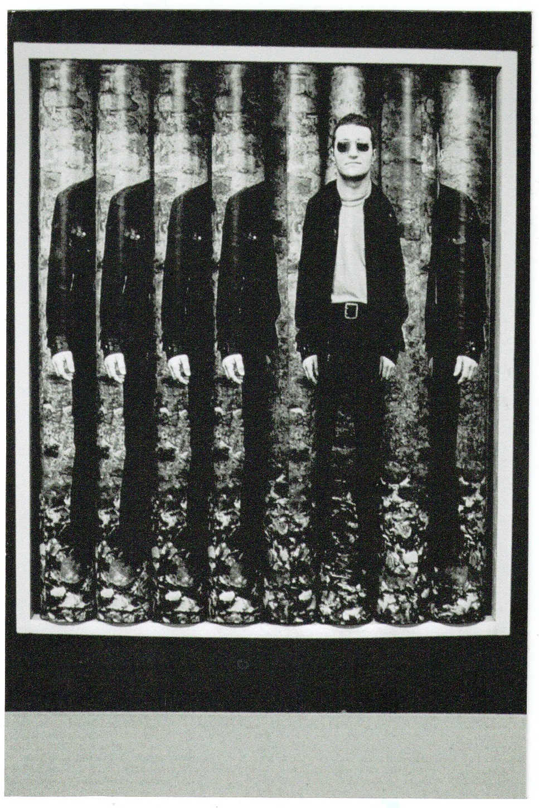

System operacyjny: Online / Protokół: Aktywny
ROLKI REWIZJA stanowi algorytmiczną reinterpretację "Rolek / fotoobiektu interaktywnego" (1970) Józefa Robakowskiego. Projekt wydobywa konceptualną esencję z mechaniki analogowej i inkorporuje ją w architekturę cyfrową. Realizacja nie jest repliką, lecz dialogiem między kliszą a kodem, przesuwającym granicę interakcji z fizycznego dotyku na niematerialny interfejs.

Pierwotne dzieło opierało się na manualnej manipulacji segmentami autoportretu poprzez obracanie fizycznych walców. W cyfrowym środowisku ręczne toczenie zostaje zastąpione ciągłym, generatywnym procesem pętli. W przeciwieństwie do skończonego mechanizmu, pętla kodu wprowadza element niestabilności i pseudolosowości.
Miejsce realistycznego autoportretu zajmuje hiperskonstruowany awatar, generowany przez algorytmy AI. Postać osadzona w estetyce subkulturowej kwestionuje pojęcie autentyczności i fizycznej obecności.
Odbiorca aktywuje dzieło poprzez interfejs, stając się nie tyle widzem, co operatorem sekwencji. Użytkownik, operując "cyfrowym joystickiem" lub klawiaturą, symuluje wysiłek związany z fizycznym obrotem walców.
Projekt pełni funkcję krytycznego komentarza do kultury remiksu i ciągłej redefinicji wizerunku pod dyktando systemów generatywnych.
Glitch oraz efekt błysku (CSS .flash) stanowią celowe zakłócenie
(disruption) percepcji. Błysk aktywowany interakcją symuluje
prześwietlenie lub błąd migawki.
Warstwa dźwiękowa jest systemem reakcji behawioralnych, stanowiących metronom interakcji. Dźwięk toczenia symbolizuje nieustanny ruch rolki.
Projekt jest jednocześnie archiwum i symulacją cyfrowej entropii. Podczas gdy analogowa rolka ulega fizycznemu zużyciu, cyfrowa rewizja konfrontuje się z rotacją kodu.
Ostatecznym celem rewizji jest refleksja nad "cielesnością" wirtualnego formatu. Rewizja stanowi dowód na to, że konceptualna energia sztuki nie wygasa - wymaga jedynie nowego protokołu.
Protokół ROLKI REWIZJA został zaprojektowany i wdrożony przez użytkownika PIXIART. Kontakt: